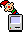
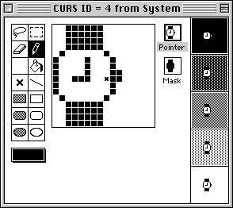

ResEdit and the recreation of the Mac OS wristwatch cursor animation
5 March, 2017 – Art. 21 – First published on Ka of Isis 150406
On the title of this article
Don’t get me wrong. I appreciate subtleness, hidden meanings and riddles, but I love those long explicit titles, be them for books, movies, social standing or what; Indiana Jones and the Kingdom of the Crystal Skull; My People Were Fair and Had Sky in Their Hair… But Now They’re Content to Wear Stars on Their Brows; Sky Captain and the World of Tomorrow; The Persecution and Assassination of Jean-Paul Marat as Performed by the Inmates of the Asylum of Charenton Under the Direction of the Marquis de Sade (this one seemingly leaves nothing to the imagination, but I have not seen the play and cannot possibly tell); No Matter How Much You Promise to Cook or Pay the Rent You Blew It Cauze Bill Bailey Ain’t Never Coming Home Again; Frankenstein; or, The Modern Prometheus; Dr. Strangelove or: How I Learned to Stop Worrying and Love the Bomb; Sir Alan Reid, GCVO, Keeper of the Privy Purse; The Rt Hon. the Baroness D’Souza CMG, Lord Speaker. The list goes on.
The background
April. Easter in Norway. Winter was melting away in the low country – and half the population headed for the mountains for a final battle with snow and cold weather. Me nay, however. I am not particularly fond of skiing in the first place and definitely averse to the idea of applying a sticky, waxy substance to the underside of my skis to avoid the inevitable two-steps-forward-and-one-step-back uphill struggle on wet snow. And if/when I ever return, the wax and adhered branches, cones, rubble and diverse natural debris must be removed with scrapers and generous amounts of organic solvent.
In other words, it was the perfect time to retreat into a bubble of nostalgia, rummage the attic for a retired Macintosh, search a dusty CD archive for old software and fire up – shudder – Fireworks to recreate a 1980s bitmap animation. Yes, I needed the animated cursor to prove a point in a different article, but the net effect hardly justified the time invested. Even so, I did not feel all together alone there in that bubble. The original interface graphics designer for Apple Computer and NeXT, Susan Kare, now sells signed and numbered fine-art prints of her classic computer icon designs and the Museum of Modern Art has acquired her graph paper drawings sketching out the ideas. And a few years back they offered this real wristwatch in South Korea, The Icon Watch, based on Kare’s work. If you shop around you may still acquire a white specimen, but that would never be as thrilling – for black rules.
ResEdit
So, finally in ResEdit, the definitive resource editor for the classic Macintosh operating system. Friend to the friendly hacker and developer alike; where we could modify and customize Mac OS to our and our customer’s liking. Make fun and surprise. Those were the days – but nothing of that now. Jack-in-the-box is only out to extract the individual frames for the wristwatch animation, the one that told the computer user that the machine was busy; “Please wait!”.
As it turns out, the frame icons are stored in at least two resources – Finder and System – but only the latter has all the eight necessary frames.

ResEdit was outfitted with its very own bitmap editor, and working in a grid 8x the final icon made modifications visibly easy. Application icons were restricted to a 32x32 matrix while cursor icons had 16x16 pixels available to them.

Ta-dah
Without further ado and to cut a long story short: A few screendumps, copies and pastes, Photoshop clean-ups, and Fireworks manipulations later, here you have it: The wristwatch animation: